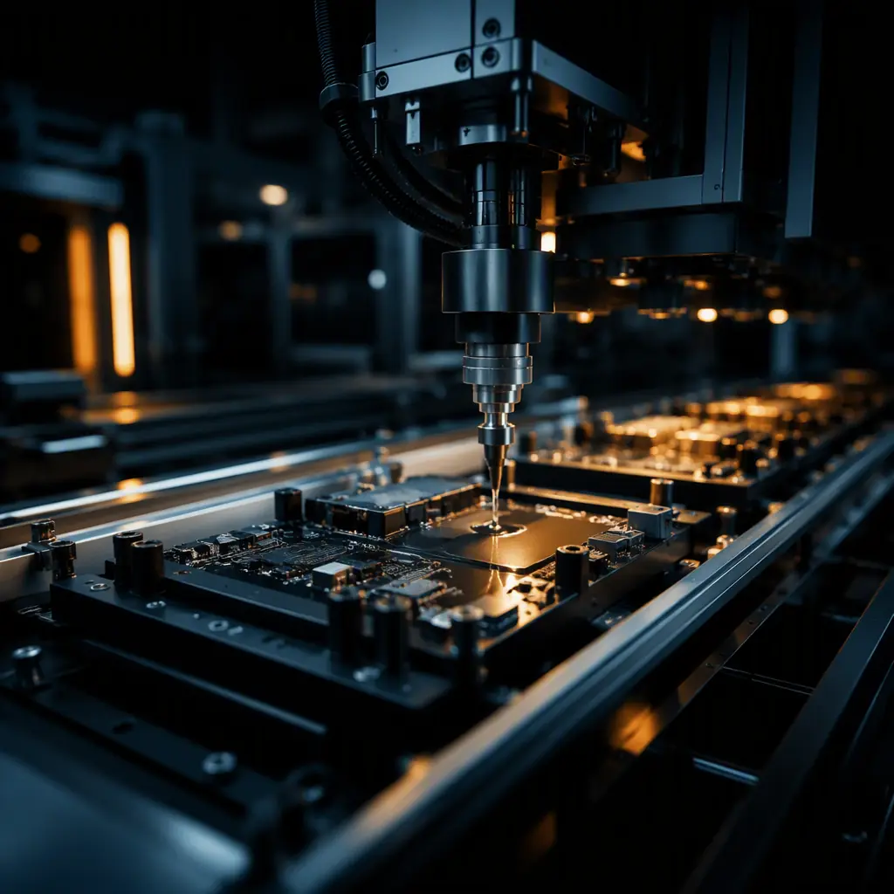
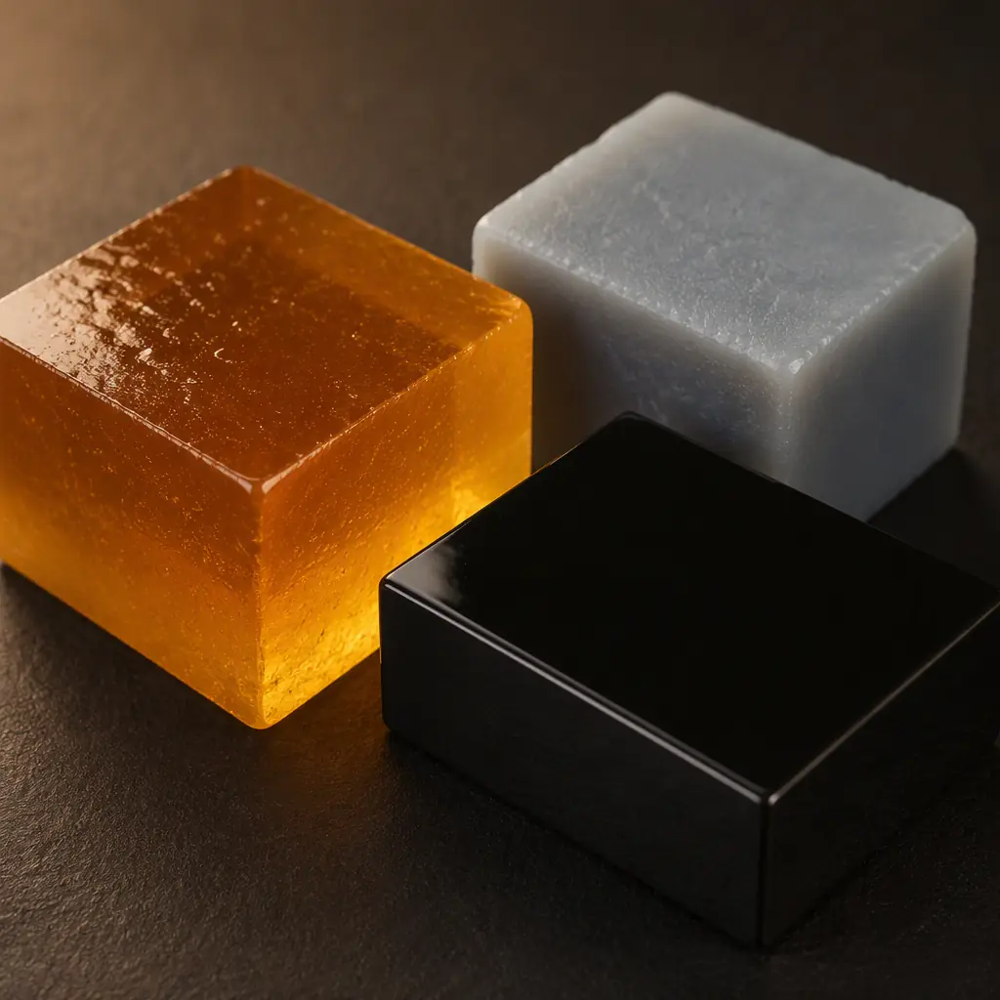
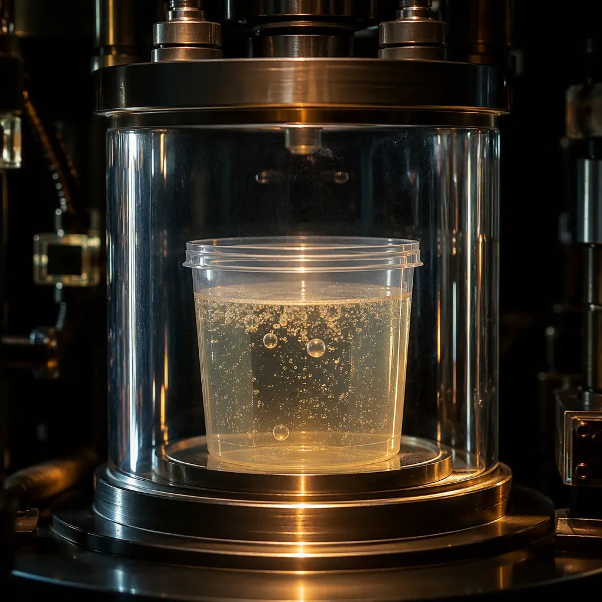

When a PCB must survive submersion, vibration, chemical exposure, or extreme temperature swings, conformal coating is often the default answer — but it is not always the right one. Potting and encapsulation completely surround the assembly in a solid compound, sealing every component, solder joint, and trace inside a protective block. For automotive sensors, marine electronics, LED drivers, and industrial controls, potting is frequently the only protection that survives the environment. The catch: it is permanent, it traps heat, and it is unforgiving of design mistakes.
At Huaxing PCBA, our encapsulation line dispenses polyurethane, silicone, and epoxy potting compounds with automated meter-mix systems and vacuum degassing, supporting automotive and industrial customers across 60+ encapsulated product programs. This guide covers the material decision — urethane vs silicone vs epoxy — the thermal and mechanical trade-offs that determine long-term survival, and the rework reality you need to accept before you commit to potting.

Potting vs Conformal Coating: When Full Encapsulation Wins
Conformal coating applies a thin film (25-200 μm) that follows the board contours, protecting surfaces but leaving component bodies, solder fillets, and underneath-package areas partially exposed. Potting floods the entire assembly in 1-10 mm of compound. The decision is not about quality — it is about the threat model.
| Protection Need | Conformal Coating | Potting / Encapsulation |
|---|---|---|
| Moisture & condensation | Good | Excellent — full seal |
| Submersion / washdown | Marginal | Excellent |
| Vibration & shock damping | None | Excellent |
| Chemical / solvent exposure | Moderate | Excellent |
| Heat dissipation | Neutral | Depends on compound (thermal potting available) |
| Rework / repair | Removable | Difficult to impossible |
| Weight added | Negligible | Significant (10-100 g typical) |
Our rule of thumb: if the product faces continuous submersion, aggressive washdown chemicals, or high-G vibration with heavy components, potting is usually the right call. If the requirement is condensation resistance and moderate humidity with a need for repair, conformal coating remains the workhorse. Marine electronics are a classic potting case — our marine-grade PCB guide covers the full protection stack used for offshore products.
Key Insight: Conformal coating protects the surface; potting protects the assembly. If your failure analysis shows moisture ingress through component bodies, connector bases, or under-BGA areas, coating will not fix it — only encapsulation will.
Polyurethane vs Silicone vs Epoxy: Choosing the Compound
The potting compound is the decision that cannot be undone cheaply. Three families dominate, and each has a distinct performance profile. Matching the compound to the environment is the difference between a board that survives a decade and one that cracks internally in eighteen months.
Polyurethane — The All-Rounder
Polyurethane (PU) potting compounds offer the best balance of moisture resistance, adhesion, mechanical toughness, and cost. They are the default for automotive sensors, cable assemblies, and industrial controls. Typical properties: hardness 50-90 Shore A, elongation 100-400%, service temperature −40 to +130°C (some grades to +150°C). PU bonds aggressively to most substrates, which is excellent for sealing — and a problem for rework. It is also the most common choice for EV charging infrastructure electronics, where submersion resistance and thermal cycling coexist.
Silicone — The Temperature and Stress Champion
Silicone compounds handle the widest temperature range (−55 to +200°C+), remain flexible at low temperature, and have the lowest modulus — meaning they transmit the least mechanical stress to components and solder joints during thermal cycling. Silicone is the choice for high-temperature automotive (underhood), LED drivers, and power electronics. The trade-offs: softer (20-60 Shore A), lower mechanical protection, higher cost, and adhesion that is good but less aggressive than PU — which is why silicone-potted boards are the most likely to allow moisture creep along leads in extreme immersion. Our LED driver PCB guide covers silicone potting for lighting applications in detail.
Epoxy — Maximum Rigidity, Maximum Risk
Epoxy potting compounds cure to a hard, rigid block (70-90 Shore D) with excellent chemical resistance and dielectric strength. They are chosen for transformers, high-voltage modules, and applications needing structural rigidity. The danger: rigid epoxy transmits thermal expansion stress directly to components and solder joints. Epoxy-potted boards have the highest rate of internal cracking under thermal cycling of the three families — especially with large components. If the product must survive wide temperature swings, choose a flexible PU or silicone instead. Epoxy is also essentially unreworkable.
Key Takeaway: Match compound hardness to thermal environment: wide ΔT + rigid epoxy = cracked joints. For every 10°C of additional temperature range in your environment, favor a softer, lower-modulus compound.
Thermal Management: The Hidden Cost of Encapsulation
Potting is an excellent electrical insulator and moisture barrier — and a thermal blanket. Most compounds conduct heat 5-20× worse than air (thermal conductivity 0.2-0.6 W/m·K for standard compounds vs ~0.026 W/m·K for still air — but the compound replaces air convection, which is what actually cools components). A power component that ran at 85°C junction in free air can exceed 120°C when encapsulated, unless the design accounts for it.

Thermally Conductive Potting Compounds
Filled compounds with alumina, boron nitride, or aluminum nitride particles achieve 1.0-3.0 W/m·K — enough to conduct heat to the housing instead of trapping it. Thermally conductive silicone or PU is mandatory for any encapsulated power stage above a few watts. When we pot power modules, we verify junction temperatures with thermal imaging on the first article and adjust compound or heatsink design before production — a step that is skipped far too often. See our PCB thermal management guide for the full heat-path design methodology.
Potting to the Housing vs Potting the Board Only
Potting the board inside a housing with a thin gap between compound and case wall creates an insulating air gap that defeats the thermal path. Potting to the housing (fill-and-seal, where compound contacts the metal case) conducts heat directly to the enclosure, which then dissipates to ambient. This changes the housing design — venting, fill ports, and case material — so it must be decided before tooling. Automotive customers commonly specify fill-and-seal for motor controllers and sensors.
Mechanical Stress, CTE, and Component Compatibility
Potting compounds cure, shrink slightly, and then expand and contract with temperature — all while bonded to components of different stiffness. The resulting stress can crack ceramic capacitors, lift fine-pitch packages, or stress wire bonds. These failures are invisible from the outside and typically appear months into field use.
Low-Stress Formulations and Stress Absorbers
Flexible compounds (low Shore A) and "soft potting" silicone formulations minimize stress transfer. Where a rigid compound is required, adding a foam or elastomer liner around sensitive components absorbs strain. For large ceramic capacitors, many programs switch to coating + mechanical restraint instead of full potting precisely to avoid stress cracking. Always run a thermal cycling validation on encapsulated first articles — see our thermal cycling testing guide for the profile methodology.
Component Compatibility: What Not to Encapsulate
Some components cannot survive encapsulation: components relying on air cooling (large heatsinks, fans), components needing adjustment or calibration access (trimmers, switches), connectors that must remain exposed (use dam-and-fill to keep them clear), and components that outgas or expand significantly at temperature (large electrolytic capacitors in rigid compounds). MEMS sensors and precision references can shift calibration under compound stress. Review the BOM against the compound datasheet before committing — this review has prevented multiple costly redesigns in our programs.
The Potting Process: What Happens on the Production Line
Potting quality depends as much on process as material. The same compound can produce a flawless seal or a void-filled, moisture-wicking failure depending on how it is dispensed and cured.

Meter-Mix Dispensing and Ratio Accuracy
Two-component compounds are mixed at exact ratios (typically 1:1 to 10:1 by volume). Automated meter-mix systems hold ratio accuracy to ±1-2%, while hand mixing commonly drifts to ±5% or worse — and a 5% ratio error can change cure time by hours and final hardness by 10+ Shore points. For high-volume work, dispensing robots with heated, degassed material reservoirs are standard. For low-volume or prototype runs, pre-mixed frozen syringes eliminate ratio risk entirely.
Vacuum Degassing and Void Control
Entrapped air bubbles become moisture paths and stress concentrators. Vacuum degassing the mixed compound before dispensing, combined with controlled pour height and slow fill, keeps void content below 1-2% by volume. For deep or dense assemblies, a vacuum potting process (dispensing inside a vacuum chamber) is the only way to achieve complete fill. We verify fill quality with X-Ray on first articles and periodic samples — a 1 mm void under a high-voltage pad is a latent failure. This pairs naturally with the X-Ray inspection capability already used for BGA verification.
Cure Schedules and Handling
Cure schedules range from 30 minutes at elevated temperature (epoxies) to 24+ hours at room temperature (some silicones). Accelerated cure must stay within the compound's specified temperature window — overheating a PU compound causes foaming or embrittlement. After cure, dimensional checks, hardness spot-checks, and electrical tests confirm the process is in control. For assemblies that will face vibration qualification, potting often replaces the need for underfill and other mechanical reinforcement — one of its under-appreciated benefits.
Rework Reality: Encapsulation Is a Commitment
Before specifying potting, your team must accept the repair implications. Encapsulated boards are rarely reworkable in the conventional sense — the compound must be removed thermally, chemically, or mechanically, and the process often damages the board or components underneath.
Rework Options and Their Costs
Soft silicones can sometimes be cut away with hot knives or chemical softeners; PU and epoxy require aggressive methods — heat guns (risking component damage), solvents (slow and hazardous), or milling (destructive). A reworkable silicone with a release coating is a deliberate design choice for products with known field-repair needs. For most potted products, the practical strategy is replace-at-unit level, with a documented rework procedure for the specific compound used. If your product requires component-level field repair, potting is probably the wrong protection strategy.
Procurement Tip: Ask your assembly partner three questions before approving a potted design: (1) What is the compound's verified thermal conductivity and does it match your power budget? (2) What is the process void target and how is it verified? (3) What is the documented rework path if a field failure occurs? Suppliers who cannot answer all three are selling you a process they have not validated.
What This Means for Your Next PCB Order
Potting and encapsulation deliver protection no coating can match — full submersion resistance, vibration damping, and a permanent seal against the environment. The trade-offs are real: heat trapping, mechanical stress, weight, and the end of conventional repair. The right decision comes from matching compound family to thermal environment, validating with thermal imaging and thermal cycling on first articles, and controlling the process with ratio accuracy and void management. At Huaxing PCBA, our encapsulation line supports polyurethane, silicone, and epoxy systems with automated dispensing, vacuum degassing, and X-Ray void verification — and our engineering team reviews component compatibility and thermal paths before you commit to tooling. Read our assembly process overview to see where encapsulation fits the production flow, or contact our engineering team to evaluate potting for your product.